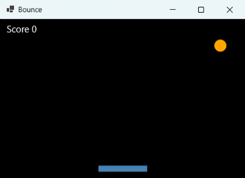

Drawing and animation
Draw shapes and text on a canvas, move them with a timer and control them with the keyboard — the three ingredients of every simple game.
What you will learn#
- drawing with
UiCanvas, - animation with a timer and a "game loop",
- keyboard events and why a form needs
KeyPreview, - keeping the program state in global variables.
The ingredients of a game#
- State: numbers that describe the world (position, speed, score).
- Update: a function that changes the state a little (move the ball).
- Draw: a function that shows the state.
- A timer that calls update and draw, again and again.
- Input: keys change the state.
The program#
# drawing and animation - a canvas, a timer and the keyboard
load "dotnet.ring"
using {
"System.Drawing"
"System.Windows.Forms"
}
C_WIDTH = 400
C_HEIGHT = 260
oForm = ""
oPicture = ""
oCanvas = ""
oTimer = ""
nX = 60
nY = 40
nDX = 4
nDY = 3
nPaddle = 160
nScore = 0
func main
oForm = uiForm("Bounce",C_WIDTH,C_HEIGHT)
oPicture = uiPictureBox(oForm,0,0,C_WIDTH,C_HEIGHT)
oCanvas = new UiCanvas(oPicture) # a canvas draws on the picture box
draw()
# the form (not a button) must receive the keys: arrows move the paddle
oForm.KeyPreview = True
oForm.setKeyDownEvent("keyPressed(aDotNetArgs[2].KeyCode)")
# a timer calls step() every 20 milliseconds
oTimer = uiTimer(20,"step()")
oTimer.Start()
uiRun(oForm)
func step
nX += nDX
nY += nDY
if nX < 10 or nX > C_WIDTH - 10
nDX = -nDX
ok
if nY < 10
nDY = -nDY
ok
# the ball hits the paddle
if nY >= C_HEIGHT - 30 and nX >= nPaddle and nX <= nPaddle + 80 and nDY > 0
nDY = -nDY
nScore++
ok
if nY > C_HEIGHT
nY = 40
nScore = 0
ok
draw()
func draw
oCanvas.clear("Black")
oCanvas.fillCircle(nX,nY,10,"Orange")
oCanvas.fillRect(nPaddle,C_HEIGHT - 20,80,10,"SteelBlue")
oCanvas.text("Score " + nScore,8,6,"White",11)
oCanvas.show()
func keyPressed cKey
if cKey = "Left"
nPaddle = max(0,nPaddle - 30)
but cKey = "Right"
nPaddle = min(C_WIDTH - 80,nPaddle + 30)
ok
draw()
How it works#
The canvas#
uiPictureBox(oForm, x, y, w, h) creates a picture box, and new UiCanvas(oPicture) gives it a bitmap and simple drawing calls:
| Call | Draws |
|---|---|
clear(color) | fills everything |
fillCircle(x,y,radius,color) | a filled circle |
fillRect(x,y,w,h,color) | a filled rectangle |
text(text,x,y,color,size) | text |
setPixel(x,y,red,green,blue) | one pixel from its red, green and blue parts (0 to 255) |
setPixels(x,y,width,height,rgb) | a rectangle of pixels from a text of 3 bytes for each pixel, much faster than one setPixel for each |
show() | puts the finished picture on the screen |
A color is a name ("Orange"), a #RRGGBB text, or a .NET Color. Every frame the program clears the canvas and draws everything again; show() makes the result visible.
The timer#
uiTimer(20,"step()") creates a timer that calls step() every 20 milliseconds (50 times a second). Start() starts it, Stop() stops it. A Windows Forms timer ticks on the Ring thread, so it is safe to run Ring code in it.
The game logic#
step() moves the ball by nDX and nDY, bounces it off the walls by reversing a speed (nDX = -nDX), and checks whether it hit the paddle: the ball is low enough and between the paddle's left and right edges.
The keyboard#
oForm.KeyPreview = True
oForm.setKeyDownEvent("keyPressed(aDotNetArgs[2].KeyCode)")By default the control that has the focus gets the keys. KeyPreview = True lets the form see them first. The event arguments are [sender, eventArgs]; aDotNetArgs[2].KeyCode is the key as a text: "Left", "Right", "A", "Space". (If the form contains buttons that steal the arrow keys, use uiGameKeys: see Windows Forms.)
Testing a game#
A test cannot wait for animation. selfTest stops the timer, calls step() three times and checks the numbers. It also presses Left by calling keyPressed("Left") and checks the paddle position, and reads a pixel from the canvas (oCanvas.pixel(x,y)) to prove that the ball is drawn.
The checks of this program are in a separate file, selftest/ch10_bounce.ring:
# the checks of ch10_bounce.ring: run with ring ch10_bounce.ring --selftest (the program loads this file and runs selfTest() once its window is shown)
func selfTest
oTimer.Stop()
nBefore = nX
step() step() step()
dnAssert("the ball moved",nX,nBefore + 3 * nDX)
keyPressed("Left")
dnAssert("the paddle moved",nPaddle,130)
dnAssert("the ball is orange",oCanvas.pixel(nX,nY),"ffffa500")What you learned#
- state, update, draw, timer, input,
UiCanvasfor drawing,show()to display,KeyPreviewandKeyCode,- stop the timer in tests and call the update by hand.
Exercises#
- Make the ball faster each time it hits the paddle.
- Add three lives: when the ball falls, take one life and show it; at zero show Game over.
- Add the
Spacekey to pause (oTimer.Stop()/Start()). - Draw a row of bricks at the top and remove the one the ball hits. The Pong and Snake applications show complete games.